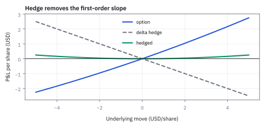
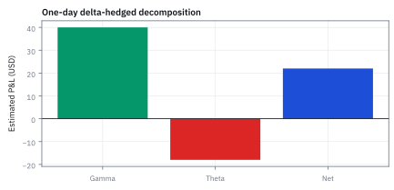
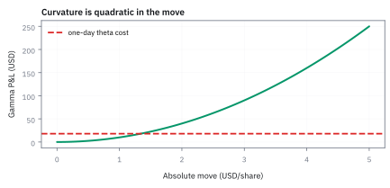
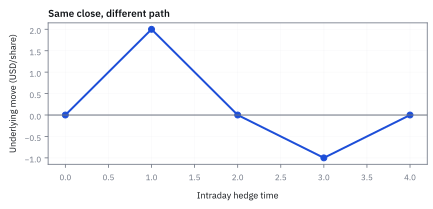
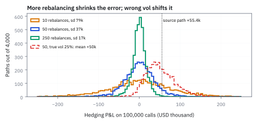
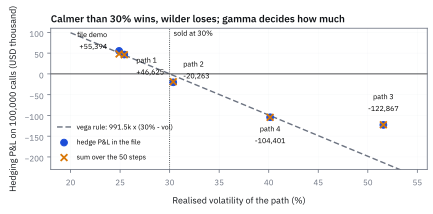

18.4 Delta Hedging P&L
delta ลด exposure อันดับหนึ่ง แต่ไม่ได้ลบความเสี่ยงทั้งหมด
ซื้อ call บนหุ้นราคา \$100 ที่ implied vol 20% ($\Gamma=0.0575, \Theta=-0.0456$ ต่อวัน) แล้ว delta hedge 5 วัน หากหุ้นแกว่งวันละ +1.8, -2.3, +0.4, -0.3, +2.1 กำไรขาดทุนจะมาจากไหน และคุ้มค่าเวลาที่จ่ายหรือไม่?
เฉลย: ตลาดแกว่งจริงด้วย realized vol 25.78% สูงกว่า implied 20% กำไรสะสมจาก gamma หัก theta อยู่ที่ +\$0.1510 (มูลค่าพอร์ตจริง +\$0.1496 ) โดยมีจุดคุ้มทุนรายวันอยู่ที่ $\pm 1.26$ ดอลลาร์ แต่การรีบาลานซ์หุ้น 0.4087 หุ้น เสียค่าฟริกชัน \$0.0412 กินกำไรไปถึง 27.5%
ศัพท์ที่ใช้ในหัวข้อนี้
- delta hedging
- การถือ underlying ปริมาณตรงข้ามกับ option delta เพื่อลด sensitivity อันดับหนึ่งต่อการขยับราคาเล็ก ๆ ใช้ควบคุม directional exposure ระหว่าง rebalancing dates
- gamma
- อัตราที่ delta เปลี่ยนเมื่อ underlying price เปลี่ยน ใช้วัด curvature ของ option และบอกว่าการ hedge ต้องปรับบ่อยเพียงใด
- theta
- การเปลี่ยน option value ตามเวลาเมื่อปัจจัยอื่นคงที่ ใช้แยก time decay ออกจาก P and L ที่เกิดจากราคาเคลื่อนไหว
- implied volatility
- volatility ที่เมื่อใส่ใน pricing model แล้วให้ราคาตลาดของ option ใช้แปล option premium เป็นหน่วยความผันผวนโดยยังไม่ใช่ realized outcome
- realized volatility
- ความผันผวนที่เกิดขึ้นจริงจากการเคลื่อนไหวของราคา underlying ในอดีต ใช้เปรียบเทียบกับ implied volatility เพื่อวัดความคุ้มค่าของการทำ delta hedge
- gamma scalping
- กลยุทธ์ซื้อขายหุ้น underlying เพื่อปรับ delta ให้เป็นกลางตามความโค้ง gamma ใช้สร้างกำไรจากการซื้อต่ำขายสูงเมื่อราคาแกว่งตัว
- self-financing
- คุณสมบัติของพอร์ตจำลองที่ปรับสัดส่วนการลงทุนได้โดยไม่ต้องเติมหรือถอนเงินสด ใช้ตรวจว่ามูลค่าพอร์ตสะท้อนเฉพาะผลตอบแทนของสินทรัพย์
- long
- position ที่ได้ประโยชน์เมื่อมูลค่าของ instrument สูงขึ้น ใช้ระบุทิศทาง exposure และกำหนดเครื่องหมาย P and L
สัญลักษณ์ที่ใช้ในหัวข้อนี้
| สัญลักษณ์ | ความหมาย | หน่วย |
|---|---|---|
| $V$ | option value | USD |
| $S$ | underlying price | USD/share |
| $\Delta$ | จำนวนหุ้นเทียบเท่าของสถานะ option ตัวที่ระบบต้อง hedge ให้ทันภายในวินาที | share |
| $\Gamma$ | ความเร็วที่ตัวข้างบนเปลี่ยน ตัวที่บอกว่าต้องส่งคำสั่งใหม่ถี่แค่ไหน | 1/USD |
| $\Theta$ | มูลค่าที่หายไปต่อวันเมื่อทุกอย่างนิ่ง ตัวที่กำหนดว่าโต๊ะต้องหาได้เท่าไรจึงจะคุ้ม | USD/day |
| $\Delta S$ | underlying price move ใน hedge interval | USD/share |
| $\Delta t$ | เวลาที่ผ่านไป | days |
ที่มาที่ไป: โต๊ะ option ทำเงินจากอะไรกันแน่
ถ้าโต๊ะ option ป้องกันความเสี่ยงจนไม่เหลือความไวต่อทิศทางราคาแล้ว คำถามที่ตามมาคือ แล้วมันทำเงินจากอะไร
คำตอบอยู่ในสิ่งที่การป้องกันความเสี่ยงแบบนั้นตัดไม่ได้ คือพจน์อันดับสองที่เหลืออยู่
พจน์นั้นบอกว่าคนขาย option ได้เงินจากเวลาที่ผ่านไป และเสียเงินเมื่อราคาเหวี่ยงแรง ส่วนคนซื้อได้ตรงข้าม
แปลว่าธุรกิจจริงของโต๊ะไม่ใช่การเดาทิศทาง แต่คือการเทรดส่วนต่างระหว่างความผันผวนที่ใช้ตั้งราคา กับความผันผวนที่เกิดขึ้นจริง ซึ่งเป็นมุมมองที่เปลี่ยนวิธีอ่านรายงานกำไรขาดทุนไปเลย
ตั้งคำถามจาก P and L ที่เกิดจริง
สมมติ long call 1,000 shares มี gamma $\Gamma=0.020$ ต่อ USD ต่อ share และ theta รวมทั้ง position $\Theta=-18$ USD/day; delta ถูก hedge ตอนต้นวัน Underlying ขยับ $+2$ USD ใน 1 day โดยละ rate, vega และ transaction cost เพื่อให้เห็น decomposition delta hedge เหมือนร่ม: ลดฝนจากทิศหนึ่งได้ดี แต่ไม่ทำให้พายุหายไป
ขั้นที่ 1 — ลองด้วยมือ: ราคาไป 102 แล้วกลับ 100 ทำไม hedge ถึงได้เงิน
ก่อน Taylor ลองเดินตามคำสั่งซื้อขายจริง ๆ: ราคาขึ้น 2 แล้วลง 2 ปิดที่เดิม แต่มือของคนที่ hedge ต้องทำอะไรบ้าง
หุ้นขึ้นจาก 100 เป็น 102 delta ของ call แต่ละตัวเพิ่ม 0.04 call 1,000 ตัวจึงต้องขายหุ้นเพิ่ม 40 หุ้นที่ 102 พอหุ้นกลับมา 100 ก็ซื้อ 40 หุ้นนั้นคืน ได้ส่วนต่าง \$80 ซึ่งเท่ากับสูตร gamma สองครั้งพอดี หักค่าเวลา \$18 เหลือ 62
ตอนราคาขึ้นไป 102 call ทุกใบไวต่อหุ้นมากขึ้น 0.04 หน่วย พอร์ตพันใบจึงมีหุ้นเทียบเท่าเกินมา 40 หุ้น เพื่อกลับมาเป็นกลางต้อง *ขาย* 40 หุ้นที่ราคา 102 พอราคากลับลงมา 100 delta หดกลับ ต้อง *ซื้อ* 40 หุ้นคืนที่ 100
ขายแพงซื้อถูกโดยไม่ได้เดาอะไรเลย นี่คือเงินของ gamma: ทุกครั้งที่ราคาแกว่งไปกลับ hedge บังคับให้เราขายบนซื้อล่าง ราคาปิดเท่าเดิมแต่ได้ \$80 ตรงกับสูตร $\tfrac12\Gamma(\Delta S)^2$ สองรอบ
ราคาที่จ่ายคือ theta: ถือ call พันใบหนึ่งวันเสียมูลค่าเวลา \$18 ไม่ว่าจะแกว่งหรือไม่ วันนี้แกว่งพอ (ได้ 80 จ่าย 18) ถ้าราคานิ่งทั้งวัน จะเสีย 18 เปล่า ๆ นี่คือทั้งธุรกิจของโต๊ะ option ในสามบรรทัด
ตัวย่อ $\Delta\Delta$ คือจำนวนที่ delta ขยับ ซึ่งเท่ากับ gamma คูณระยะที่ราคาขยับ
ขาขึ้น delta ของพอร์ตโตขึ้น 40 หุ้น จึงขายออกที่ 102 ขาลง delta หดกลับเท่าเดิม จึงซื้อคืนที่ 100 ได้กำไรจากการซื้อถูกขายแพง
บรรทัดที่ห้าถึงหกตรวจด้วยสูตรความโค้งจากหัวข้อ 13.3 ได้เลขเดียวกัน และบรรทัดสุดท้ายหักค่าเวลาหนึ่งวันออก เหลือกำไรสุทธิ \$62
ขั้นที่ 2 — Taylor expansion ของ option
จะรู้ว่า hedge เหลือความเสี่ยงอะไร ต้องกางการเปลี่ยนแปลงของราคา option ออกมาก่อน สี่บรรทัดนี้บอกชัดว่าเก็บพจน์ไหนและทิ้งพจน์ไหน พร้อมเหตุผลของแต่ละอัน ซึ่งเป็นสิ่งที่ต้องรู้ เพราะพจน์ที่ทิ้งคือที่มาของความคลาดในวันที่เลวร้ายที่สุด
ในหนึ่งวัน พจน์ $\Delta S\Delta t$ และ $(\Delta t)^2$ เล็กมากเทียบกับพจน์อื่น จึงตัดทิ้งได้ เหลือสามก้อนในบรรทัดสุดท้าย
กระจายแบบ Taylor สองตัวแปร เก็บถึงอันดับสองทั้งคู่ก่อน แล้วค่อยมาดูว่าอะไรรอด
ในกรอบหนึ่งวัน ช่วงเวลาสั้นมากจนกำลังสองของมันและผลคูณกับราคา ทิ้งได้ แต่ราคาขยับได้หลายเปอร์เซ็นต์ในวันเดียว กำลังสองของราคาจึงทิ้งไม่ได้ นี่คือการเลือกที่ต่างจาก calculus ปกติ และเหตุผลมาจากขนาดจริงของตัวเลข
แทนชื่อที่หัวข้อ 13.3 ตั้งไว้ให้ derivative แต่ละตัว ได้รูปที่ใช้จริง
สามพจน์มีความหมายต่างกันชัดเจน พจน์แรกคือกำไรจากทิศทาง พจน์สองคือกำไรจากความโค้ง และพจน์สามคือค่าเวลาที่ละลาย ข้อควรระวังคือการทิ้งพจน์ข้างบนจะไม่จริงในวันที่ตลาดกระโดดแรง
ขั้นที่ 3 — หัก underlying hedge
หักส่วนที่ hedge ด้วยหุ้นออกไป พจน์อันดับหนึ่งจะหายไปพอดี สูตรข้างล่างแปลง delta hedge จากคำพูดเป็นบัญชีที่ตรวจได้ และสองพจน์ที่เหลือคือสิ่งที่ทั้งอุตสาหกรรมเทรดกันจริง ๆ
ถือ option แล้วขายหุ้นตามจำนวนที่ delta บอก กำไรของขาหุ้นเป็นลบเพราะเป็นการขาย แล้วแทนผลของขั้นที่ 2 ลงไป
พจน์อันดับหนึ่งหักกันหมดพอดี นั่นคือความหมายทั้งหมดของ delta hedge ไม่มีอะไรมากกว่านั้น ทิศทางของราคาถูกลบออกไปแล้ว
สิ่งที่เหลือคือสิ่งที่การถือหุ้นจัดการไม่ได้ ถ้าราคาขยับแรง พจน์ความโค้งให้กำไร แต่ทุกวันที่ผ่านไปต้องจ่ายค่าเวลา สองอย่างนี้จึงเป็นการเดิมพันว่าความผันผวนจริงจะมากกว่าที่จ่ายไปหรือไม่ ไม่ใช่การเดิมพันว่าราคาจะขึ้นหรือลง
ข้อควรระวัง การหักหมดข้างบนเป็นจริงเฉพาะเมื่อปรับ hedge ต่อเนื่อง ของจริงปรับเป็นช่วง ๆ จึงเหลือเศษไว้เสมอ
ขั้นที่ 4 — แทนตัวเลข 1,000 shares
แทนตัวเลขจริงเพื่อดูว่าส่วนที่เหลือนั้นใหญ่แค่ไหนในหนึ่งวัน และมันเป็นบวกหรือลบสำหรับคนที่ขาย option
gamma gain เท่ากับ $40$ USD จาก 1,000 shares และ theta loss ของทั้ง position เท่ากับ $18$ USD ในวันเดียว
จึงได้ estimated delta-hedged gain $22$ USD ก่อนต้นทุนและ vega effect
ขั้นที่ 5 — ความสัมพันธ์ระหว่าง Gamma กับ Theta: กำไรขาดทุนจาก Realized ปะทะ Implied Volatility
สมการนี้แสดงให้เห็นว่า delta-hedged portfolio คือการเดิมพันกับความผันผวนโดยตรง หาก realized volatility ในตลาดสูงกว่า implied volatility ที่จ่ายไป กำไรจาก gamma จะมากกว่าค่า theta decay เสมอ
$A$ คือขนาดของ gamma ในหน่วยเงิน สำหรับ call 1,000 ตัวที่หุ้น \$100 ก้อนสุดท้ายใช้ความผันผวนจริง 30% เทียบกับ 20% ที่จ่ายไป ได้กำไรวันละ \$19.84 หนึ่งวันคือ 1/252 ปี เพราะหนึ่งปีมี 252 วันเทรด
คำถามที่ลึกที่สุดของ delta hedge คือ gamma gain กับ theta loss สัมพันธ์กันอย่างไร สมการ Black-Scholes เผยว่า theta คือราคาต้นทุนของ gamma ที่ตลาดคิดล่วงหน้าผ่าน implied volatility
เมื่อนำ theta เข้าไปแทนในสมการ P&L พจน์จะจัดรูปดึงตัวร่วม $S^2 \Gamma$ ออกมาได้ เหลือผลต่างระหว่างความผันผวนจริงที่เกิดขึ้นกับความผันผวนที่ตลาดตั้งราคาไว้
สูตรบรรทัดนี้บอกความจริงของโต๊ะ option ทั้งหมด: คนทำ delta hedge ไม่ได้เดาว่าหุ้นจะขึ้นหรือลง แต่กำลังเดิมพันว่า realized volatility จะชนะ implied volatility หรือไม่
ลองแทนเลขจริง หุ้น \$100 ซื้อ call ไว้ที่ implied volatility 20% แต่วันนั้นตลาดแกว่งจริง 30% พอร์ต 1,000 หุ้นจะมีกำไรสุทธิ \$19.84 ในวันเดียว
ขั้นที่ 6 — Self-Financing Replicating Strategy: การพิสูจน์เงื่อนไขไร้เงินไหลเข้าออก
คุณสมบัติ self-financing ทำให้กระบวนการ delta hedge ไม่เกิดการรั่วไหลของเงินทุน พอร์ตจำลองจึงสะท้อนผลตอบแทนของสัญญา option ได้อย่างสมบูรณ์แบบ
ก้อนล่างคือตอนปรับพอร์ตที่เวลา $t+1$ ไปเป็นหุ้น $x_{t+2}$ และเงินฝาก $y_{t+2}$ มูลค่าก่อนและหลังปรับต้องเท่ากัน ผลต่าง $\Delta x$ กับ $\Delta y$ จึงหักล้างกันพอดี
กลยุทธ์การจำลอง option จะทำงานได้จริง พอร์ตจะต้องเลี้ยงตัวเองได้หรือ self-financing แปลว่ามูลค่าพอร์ตที่เปลี่ยนไประหว่างงวด ต้องเกิดจากกำไรขาดทุนของสินทรัพย์เท่านั้น
บรรทัดสามและสี่จับมูลค่าปลายงวดลบต้นงวด จัดกลุ่มใหม่เป็นจำนวนหุ้นคูณการขยับของหุ้น บวกกับเงินสดคูณการเติบโตของดอกเบี้ย โดยไม่มีการเติมเงินหรือถอนเงินจากกระเป๋า
จังหวะปรับสัดส่วนตอนปิดงวด มูลค่าพอร์ตก่อนและหลังการซื้อขายต้องเท่ากันทุกประการ หากต้องการซื้อหุ้นเพิ่ม $\Delta x$ ก็ต้องกู้เงินหรือขายพันธบัตร $\Delta y$ ออกมาจ่ายค่าหุ้นนั้นพอดี
สมการบรรทัดสุดท้ายคือเงื่อนไขปิดตาย: เงินที่ใช้ซื้อสินทรัพย์ตัวหนึ่ง ต้องมาจากการขายอีกตัวหนึ่งเสมอ ทำให้ผลการจำลอง option บริสุทธิ์และไร้ arbitrage
ขั้นที่ 7 — Gamma Scalping รายวัน: การคำนวณกำไรขาดทุน 5 วัน จากความโค้งและค่าเวลา
ติดตามผลการจำลอง 5 วันบนหุ้นราคา \$100 ที่มี $\Gamma = 0.0575$ และ $\Theta = -0.0456$ ดอลลาร์ต่อวัน เมื่อราคาขยับวันละ $+1.8, -2.3, +0.4, -0.3, +2.1$
$G$ คือกำไรจาก gamma ทั้งห้าวัน และ $\Theta_5$ คือค่าเวลาห้าวัน หน่วยเป็น USD ต่อหุ้น
วันที่ 2 มีความผันผวนแรงที่สุดที่ $-2.3$ ดอลลาร์ ให้กำไรจาก gamma สูงถึง $+0.1521$ ดอลลาร์ ซึ่งเมื่อหักค่าเวลา $-0.0456$ แล้ว เหลือกำไรสุทธิ $+0.1065$ ดอลลาร์
เครื่องหมายลบคูณลบกลายเป็นบวก ทิศทางราคาจึงไม่มีผลต่อกำไรของ gamma มีเพียงความผันผวนเท่านั้นที่สร้างมูลค่า
กำไรสะสมตามสูตรประมาณการอยู่ที่ $+0.1510$ ดอลลาร์ ใกล้เคียงกับมูลค่าพอร์ตจากการจำลองจริง $+0.1496$ ดอลลาร์ โดยคลาดเคลื่อนเพียง 0.97% จากการเปลี่ยนแปลงของ Greek ระหว่างทาง
ขั้นที่ 8 — จุดคุ้มทุนรายวันและการแปลงเป็น Realized Volatility
แก้สมการหากำไรขาดทุนเท่ากับศูนย์เพื่อหาขนาดการเคลื่อนไหวของราคาหุ้นที่คุ้มกับค่า theta decay ที่ต้องจ่ายในแต่ละวัน
จุดคุ้มทุนรายวันถูกกำหนดโดย implied volatility และราคาหุ้น โดยพจน์ gamma ตัดกันหมดไป ทำให้จุดคุ้มทุนเท่ากับ $\pm 1.2599$ ดอลลาร์เสมอสำหรับทุกสัญญาบนหุ้นตัวเดียวกัน
ความผันผวนจริงของตลาด 5 วันมีค่าเท่ากับ $25.78\%$ ต่อปี ซึ่งสูงกว่า implied volatility ที่ $20\%$ ตลาดจึงแกว่งเกินกว่าต้นทุนค่าเวลาที่จ่ายไป
หากตลาดแกว่งเพียง $15\%$ ต่อปี ($\Delta S = 0.9449$ ดอลลาร์ต่อวัน) พอร์ต delta hedge จะขาดทุนสะสม $0.0998$ ดอลลาร์ ทั้งที่ไม่ได้คาดการณ์ทิศทางผิดแม้แต่วันเดียว
ขั้นที่ 9 — ผลกระทบของต้นทุนธุรกรรมและความถี่ในการรีบาลานซ์
ในตลาดจริง การปรับ delta มีต้นทุนการซื้อขายจาก bid-ask spread และค่าคอมมิชชัน ทำให้เกิดการประนีประนอมระหว่างความแม่นยำกับค่าฟริกชัน
$Q$ คือจำนวนหุ้นที่ซื้อขายรวมห้าวัน turnover คือมูลค่าที่ซื้อขาย ค่าธรรมเนียม 10 bp กินกำไร 0.0412 จาก 0.1496 หรือ 27.5%
การปรับพอร์ต 5 วันต้องหมุนเวียนหุ้นรวม 0.4087 หุ้น คิดเป็นมูลค่าการซื้อขาย \$41.20
ต้นทุนธุรกรรมเพียง 10 basis points สามารถกัดกินกำไรจากการทำ gamma scalping ไปถึง 27.5% เหลือผลตอบแทนสุทธิ \$0.1084
หากเพิ่มความถี่ในการ hedge เป็นวันละ 4 ครั้ง ปริมาณการหมุนเวียนหุ้นจะโตขึ้นราว 2 เท่าตามรากที่สองของความถี่ ส่งผลให้ต้นทุนพุ่งขึ้นและกำไรลดลง โต๊ะเทรดจริงจึงนิยม hedge เมื่อ delta เบี่ยงเบนเกินเกณฑ์ที่กำหนด
ที่มาที่ไป: จากทฤษฎี Black-Scholes สู่การค้า Volatility บนโต๊ะเทรด
ในปี ค.ศ. 1973 Fischer Black และ Myron Scholes ได้ตีพิมพ์สมการประเมินราคา option โดยมีสมมติฐานหลักว่าผู้ลงทุนสามารถกำจัดความเสี่ยงทิศทางได้หมดจดด้วยการทำ delta hedge อย่างต่อเนื่อง
แต่ในโลกความเป็นจริง การ rebalance ทุกวินาทีเป็นไปไม่ได้เพราะมี transaction cost นักคณิตศาสตร์การเงินอย่าง Edward Thorp และผู้ค้า option ในตลาดชิคาโกจึงพบว่าแท้จริงแล้ว โต๊ะเทรดไม่ได้หากำไรจากการทายทิศทางของราคาหุ้น แต่ทำธุรกิจซื้อขาย volatility
หาก option ในตลาดถูกตั้งราคาต่ำเกินไปเมื่อเทียบกับความผันผวนจริง เทรดเดอร์จะเข้าซื้อ option แล้วทำ delta hedge เพื่อเก็บเกี่ยวส่วนต่างระหว่าง realized volatility และ implied volatility ซึ่งกลายมาเป็นรากฐานของกลยุทธ์ volatility trading ในเวลาต่อมา
แล้วเอาไปใช้ทำอะไรได้จริงบ้าง
การรู้ว่าอะไรเหลืออยู่หลังป้องกันความเสี่ยงแล้ว เป็นสิ่งที่ทำเงินและทำให้เจ๊งบนโต๊ะ option
ใช้อธิบายว่าคนขาย option ได้เงินจากอะไร คือได้จากเวลาที่ผ่านไป และเสียเมื่อราคาเหวี่ยงแรง
ใช้ตัดสินว่าควรปรับสถานะป้องกันความเสี่ยงบ่อยแค่ไหน โดยชั่งกับต้นทุนการซื้อขาย
ใช้อธิบายกำไรขาดทุนประจำวันให้ผู้บริหารฟัง ว่ามาจากส่วนไหนบ้าง
Figure 18.4a — delta hedge ลบเส้นตรง

ภาพ schematic แยก option P and L ที่โค้งออกจาก underlying hedge ที่เป็นเส้นตรง; ผลรวมเหลือ curvature ซึ่งเป็น gamma exposure
Figure 18.4b — gamma gain เทียบ theta loss

bar นี้ใช้ตัวเลขของโจทย์: gamma gain \$40 และ theta loss \$18 ต่อ 1,000 shares ใน 1 day ผลสุทธิ \$22 เป็น model approximation
Figure 18.4c — move ใหญ่ขึ้นทำให้ gamma term โตเร็ว

gamma term โตตามกำลังสองของ price move ขณะที่ theta ของวันเดิมคงที่; จึงอธิบายว่าทำไม realized path และ hedge frequency สำคัญ
Figure 18.4d — path ของราคาเปลี่ยนผลจากการ hedge

เส้นทาง intraday นี้กลับมาปิดที่จุดเดิมแต่มีความผันผวนระหว่างทาง; path นี้คือเหตุผลที่ discrete hedge สะสม gamma P&L และต้นทุนหลายครั้ง แม้ราคาปิดจะไม่เปลี่ยน
ของจริงปรับได้เป็นช่วง: hedge call 100,000 สัญญา 50 ครั้งในสามเดือน
แบบฝึกของคอร์สให้หุ้น \$50 call strike 50 อายุ 0.25 ปี volatility 30% ดอกเบี้ย 2% ต่อปีแบบต่อเนื่อง ขาย call 100,000 สัญญาแล้วถือพอร์ตเลียนแบบ ปรับ 50 ครั้ง ห่างกันครั้งละ 0.005 ปี หรือราว 1.26 วันทำการ
เริ่มด้วยเงินค่า call \$310,815 ซื้อหุ้นตาม delta 54,313 หุ้น ส่วนที่ขาดกู้มา 2.40 ล้าน ทุกช่วงพอร์ตโตตามราคาหุ้นและดอกเบี้ยของเงินกู้ ไม่มีเงินเติมหรือดึง แล้วปรับจำนวนหุ้นตาม delta ใหม่ ช่วงแรกหุ้นลงเหลือ 49.51 delta ลด จึงขายหุ้น 2,696 หุ้นเอาเงินไปลดหนี้
ครบสามเดือนหุ้นอยู่ที่ 54.41 ต้องจ่ายตาม call $L$ เท่ากับ \$440,787 พอร์ตมี 496,181 เหลือกำไร \$55,394 ทั้งที่ทฤษฎีบอกว่า hedge ที่สมบูรณ์ควรจบที่ศูนย์ เหตุผลคือเส้นทางนี้เหวี่ยงจริงเพียง 24.9% ต่อปี ต่ำกว่า 30% ที่ใช้ขาย คนขายที่ hedge จึงได้ส่วนต่างนั้น
สไลด์เขียนสมการเดียวกันแบบมีเงินปันผล $c$ ด้วย คือ $V_{i+1}=V_i+\delta_i(S_{i+1}+S_ic\Delta t-S_i)+(V_i-\delta_iS_i)(e^{r\Delta t}-1)$ ก้อนแรกคือกำไรจากหุ้นบวกเงินปันผลที่ได้ ก้อนที่สองคือดอกเบี้ยของเงินสดที่เหลือ แบบฝึกนี้ไม่มีปันผล
ความถี่ของการปรับ และความผันผวนที่ใช้ผิด
รันแบบฝึกเดิมซ้ำ 4,000 เส้นทางที่ความผันผวนจริง 30% โดยปรับ 10, 50 และ 250 ครั้งตลอดอายุสามเดือน (250 คือห้าเท่าของ 50 ไม่ใช่จำนวนวัน) แล้วรันอีกชุดที่ความผันผวนจริงเพียง 25% แต่ยังใช้ 30% ตั้งราคาและหา delta
ปรับถี่ขึ้นห้าเท่า ความคลาดของ hedge ลดราว $\sqrt5$ เท่า ไม่ใช่ห้าเท่า นี่คือเหตุผลที่สไลด์บอกว่า hedge ต่อเนื่องทำไม่ได้จริง และทุกช่วงที่ปรับไม่ทันจะทิ้งส่วนที่เลียนแบบไม่ได้ไว้ ส่วนต่างนี้เฉลี่ยเป็นศูนย์เมื่อใช้ความผันผวนถูก
ถ้าความผันผวนที่ใช้ผิด ส่วนต่างไม่ได้แค่กว้าง แต่เลื่อนทั้งก้อน ใช้ 30% ขณะที่จริงเป็น 25% คนขายได้เฉลี่ย \$50,288 ใกล้กับ vega คูณ 5 จุดคือ 49,576 กำไร 55,394 ของเส้นทางในแบบฝึกจึงไม่ใช่โชค แต่เป็นผลของความผันผวนที่ต่ำกว่าที่ขาย
สไลด์สรุปว่าเมื่อช่วงห่างเข้าใกล้ศูนย์ พอร์ตจะเท่ากับ payoff ก็ต่อเมื่อความผันผวนที่ใช้เท่ากับของจริง ซึ่งไม่มีใครรู้ล่วงหน้า และราคาจริงก็ไม่ได้เดินแบบ geometric Brownian motion การเลียนแบบในโลกจริงจึงเป็นการประมาณเสมอ
Figure 18.4e — ความถี่ของการปรับและความผันผวนที่ใช้ผิด

กำไรขาดทุนของการ hedge call 100,000 สัญญาจาก 4,000 เส้นทางจำลอง ปรับ 10 ครั้งกระจายกว้าง sd \$79,000 ปรับ 250 ครั้งเหลือ 17,000 ทุกเส้นมีกลางที่ศูนย์ เส้นประแดงคือกรณีความผันผวนจริง 25% ที่ขายด้วย 30% ทั้งก้อนเลื่อนไปทางกำไร เส้นจุดคือผล 55,394 ของเส้นทางในแบบฝึก
สี่ทางเดินในแบบฝึกหัด: hedge แพ้หรือชนะตามความผันผวนที่เกิดจริง
แผ่นที่สองของไฟล์เดียวกันมีราคาหุ้นอีกสี่ทางเดิน ทางละ 50 ช่วง ใช้ขั้นตอน hedge เดิมกับทุกทาง ขาย call ที่ volatility 30% เหมือนกันหมด ผลต่างกันเพราะหุ้นแต่ละทางแกว่งไม่เท่ากัน
$\sigma_{\text{real}}$ คือความผันผวนที่เกิดจริงบนทางเดินนั้น คิดแบบเดียวกับไฟล์ คือค่า sd ของ log return 50 ช่วง คูณ $\sqrt{200}$ เพราะหนึ่งปีมี 200 ช่วงขนาด 0.005 ปี
$\mathcal V$ คือ vega ของ call ทั้ง 100,000 ตัวความผันผวนขยับ 1 จุด ราคาเปลี่ยนราว \$9,915 พอร์ตที่ hedge แล้วจึงได้หรือเสียราว vega คูณส่วนต่างระหว่างความผันผวนที่ขายกับที่เกิดจริง ทางที่ 4 ประมาณได้ −100,540 ใกล้ของจริงที่ −104,401
ทางที่ 3 ประมาณได้ −213,870 แต่เสียจริงแค่ 122,867 เพราะ gamma ไม่คงที่ ก้อนล่างคิดทีละช่วงตามขั้นที่ 5 $g_i$ คือน้ำหนักของช่วงที่ $i$ สองในสามครั้งที่หุ้นแกว่งแรงที่สุดของทางนี้เกิดตอนราคา 61 และ 66 ซึ่ง call ลึกใน the money แล้ว gamma เหลือน้อยมาก ความผันผวนสองครั้งนั้นจึงแทบไม่มีราคา
ทางที่ 2 แกว่ง 30.4% แทบเท่า 30% vega บอกว่าควรเสียแค่ราว 3,600 แต่เสีย 20,263 เพราะช่วงที่แกว่งแรงที่สุดเกิดตอนหุ้นอยู่ราว 50 ตรง strike ซึ่ง gamma สูงสุด ผลรวมทีละช่วงได้ −18,843 ใกล้ของจริง hedge ขาดทุนเมื่อหุ้นแกว่งแรงตรงจุดที่ gamma สูง ไม่ใช่แค่เมื่อความผันผวนเฉลี่ยสูง
ห้าทางเดินเทียบกัน
| ทาง | vol จริง | P&L | ทีละช่วง |
|---|---|---|---|
| ตัวอย่าง | 24.9% | +55,394 | +48,063 |
| 1 | 25.4% | +46,625 | +46,106 |
| 2 | 30.4% | −20,263 | −18,843 |
| 3 | 51.6% | −122,867 | −122,519 |
| 4 | 40.1% | −104,401 | −104,578 |
แถวแรกคือทางเดินตัวอย่างของไฟล์ แถว 1 ถึง 4 คือสี่ทางในแผ่นที่สอง P&L คือมูลค่าพอร์ต hedge ตอนจบ ลบเงินที่ต้องจ่ายให้ call 100,000 ตัว หน่วย USD คอลัมน์สุดท้ายคือผลรวมทีละช่วงจากก้อนล่างของสูตรข้างบน ทางที่ 1 จบที่ 48.21 และทางที่ 4 จบที่ 43.00 ต่ำกว่า strike ไม่ต้องจ่ายอะไรเลย แต่ทางที่ 4 ก็ยังขาดทุน 104,401 เพราะเงินหายไประหว่างทางตอนตามซื้อขายหุ้น
Figure 18.4f — กำไรขาดทุนของ hedge ตามความผันผวนที่เกิดจริง

ห้าทางเดินจากไฟล์ของคอร์ส จุดสีน้ำเงินคือผลในไฟล์ กากบาทคือผลรวมทีละช่วง เส้นประคือ vega คูณส่วนต่างจาก 30% ทางที่แกว่งน้อยกว่า 30% กำไร ทางที่แกว่งมากกว่าขาดทุน ทางที่ 3 อยู่เหนือเส้นมากเพราะแกว่งแรงตอน gamma เล็ก
ตัวอย่างที่สอง — ปิดราคาเดิม แต่ระหว่างวันไม่ได้อยู่นิ่ง
คำถาม: หุ้นเปิดและปิดราคาเท่าเดิม แต่ระหว่างวันขึ้น \$2 แล้วลง \$2 option ที่ hedge delta ไว้จะไม่มีกำไรขาดทุน เพราะผลตอบแทนปิดถึงปิดเป็นศูนย์จริงไหม?
ของที่มี: ขั้นที่ 1 ถึง 3
1 ตอนหุ้นขึ้นเป็น 102 delta ของ option เพิ่ม hedge จึงต้องขายหุ้นที่ราคาสูง
2 ตอนหุ้นกลับมา 100 delta ลด hedge จึงซื้อหุ้นคืนที่ราคาต่ำ
3 ขายสูงซื้อต่ำคือกำไรจาก gamma แม้ราคาแรกกับราคาสุดท้ายเท่ากัน
ตรวจเองใน 10 วินาที: เส้นทาง 100 → 102 → 100 ให้โอกาสปรับ hedge สองครั้ง เส้นแบน 100 → 100 ไม่ให้เลย
แปลว่าอะไร: ผลจริงขึ้นกับเส้นทางระหว่างวัน ราคาที่ส่งคำสั่งได้ และ spread จึงสรุปกำไรจาก gamma ด้วยราคาปิดชุดเดียวไม่ได้
คำตอบ — gamma scalping 5 วัน กำไรมาจากไหน
คำถาม: ซื้อ call บนหุ้น \$100 ที่ implied vol 20% gamma 0.0575 theta −\$0.0456 ต่อวัน แล้ว hedge delta ทุกวัน 5 วัน หุ้นแกว่ง +1.8, −2.3, +0.4, −0.3, +2.1 กำไรขาดทุนมาจากไหน และคุ้มค่าเวลาที่จ่ายไหม?
ของที่มี: ขั้นที่ 7 ถึง 9
1 ผลรวมกำลังสองของความผันผวนคือ 13.19 กำไรจาก gamma คือ ½(0.0575)(13.19) = \$0.3792
2 ค่าเวลา 5 วันคือ 5 × 0.045635 = \$0.2282 เหลือ \$0.1510 ต่อหุ้น มูลค่าพอร์ตจริง 0.1496
3 จุดคุ้มทุนรายวันคือ ±\$1.26 วันที่ 1, 2 และ 5 แกว่งเกินจึงได้ วันที่ 3 และ 4 ไม่ถึงจึงเสียความผันผวนที่เกิดจริง 25.78% ชนะ 20% ที่จ่าย
ตรวจเองใน 10 วินาที: 0.3792 − 0.2282 = 0.1510 และ $\sqrt{2(0.0456)/0.0575}=1.26$
แปลว่าอะไร: กำไรจาก gamma คือการเดิมพันว่าหุ้นจะแกว่งจริงมากกว่าที่ราคา option ตั้งไว้ ต้นทุนการปรับ hedge ทุกวันกินกำไรไปได้เกือบหนึ่งในสาม desk จึงมักปรับเมื่อ delta เคลื่อนเกินแถบที่ตั้งไว้ แทนการปรับตามเวลาตายตัว
โค้ด Python จำลอง Gamma Scalping 5 วัน และตรวจสอบจุดคุ้มทุน
import math
S0 = 100.0
sigma_imp = 0.20
gamma = 0.0575
dt = 1.0 / 252.0
theta = -0.5 * sigma_imp**2 * S0**2 * gamma * dt
moves = [1.8, -2.3, 0.4, -0.3, 2.1]
sum_sq = sum(m**2 for m in moves)
assert round(sum_sq, 2) == 13.19
# Daily P&L calculation
pnl_list = [0.5 * gamma * m**2 + theta for m in moves]
total_pnl = sum(pnl_list)
assert round(total_pnl, 4) == 0.1510
# Realized volatility
daily_var = sum_sq / len(moves)
realized_vol = math.sqrt(daily_var) / S0 * math.sqrt(252)
assert round(realized_vol, 4) == 0.2578
# Daily breakeven move
breakeven = sigma_imp * S0 * math.sqrt(dt)
assert round(breakeven, 4) == 1.2599
# Transaction costs
shares_traded = [0.1030, 0.1334, 0.0237, 0.0190, 0.1296]
assert round(sum(shares_traded), 4) == 0.4087
turnover = 41.20
fee_rate = 0.0010 # 10 bps
cost = turnover * fee_rate
assert round(cost, 4) == 0.0412
net_pnl = 0.1496 - cost
assert round(net_pnl, 4) == 0.1084
print(f"Total P&L: {total_pnl:.4f}, Realized Vol: {realized_vol:.2%}, Net P&L: {net_pnl:.4f}")
import numpy as np
from scipy.stats import norm # the course exercise: 100,000 calls
S0 = K = 50.0; T, r, sig, n_opt = 0.25, 0.02, 0.30, 100_000
d1 = (np.log(S0 / K) + (r + 0.5 * sig**2) * T) / (sig * np.sqrt(T))
C0 = S0 * norm.cdf(d1) - K * np.exp(-r * T) * norm.cdf(d1 - sig * np.sqrt(T))
H0 = n_opt * norm.cdf(d1); B0 = n_opt * C0 - H0 * S0
assert abs(d1 - 0.1083) < 1e-4 and abs(C0 - 3.1082) < 1e-4 and abs(n_opt * C0 - 310_815) < 1
assert abs(H0 - 54_313) < 1 and abs(B0 + 2_404_857) < 1
V1 = H0 * 49.50722616 + B0 * np.exp(r * 0.005)
assert abs(V1 - 283_810) < 1 and abs(496_181 - n_opt * (54.4079 - 50) - 55_394) < 5
def hedge(N, sig_true, M=4000):
rng = np.random.default_rng(1); dt = T / N
S = np.full(M, S0); H = np.full(M, H0); B = np.full(M, B0)
for i in range(1, N + 1):
S = S * np.exp((r - 0.5 * sig_true**2) * dt + sig_true * np.sqrt(dt) * rng.standard_normal(M))
V = H * S + B * np.exp(r * dt)
if i < N:
tau = T - i * dt
H = n_opt * norm.cdf((np.log(S / K) + (r + 0.5 * sig**2) * tau) / (sig * np.sqrt(tau))); B = V - H * S
return V - n_opt * np.maximum(S - K, 0)
sd = [hedge(N, 0.30).std() for N in (10, 50, 250)]
assert abs(sd[0] - 79_092) < 5 and abs(sd[1] - 36_722) < 5 and abs(sd[2] - 16_621) < 5
assert abs(hedge(50, 0.25).mean() - 50_288) < 5
vega = S0 * np.sqrt(T) * norm.pdf(d1)
assert abs(vega - 9.915) < 1e-3 and abs(n_opt * vega * 0.05 - 49_576) < 5
V = n_opt * vega # the four exercise paths
assert abs(V * (0.30 - 0.4014) + 100_540) < 10 and abs(V * (0.30 - 0.5157) + 213_870) < 10
assert abs(V * (0.30 - 0.3036) + 3_570) < 10 # path 2: vega says smallสคริปต์นี้ตรวจสอบการคำนวณ gamma-theta P&L รายวัน, realized volatility, จุดคุ้มทุน $\pm 1.2599$ ดอลลาร์ และต้นทุนการรีบาลานซ์
กับดัก: เรียก delta-neutral ว่า risk-neutral
delta-neutral ณ เวลาเดียว ไม่ได้ neutral ต่อ gamma, vega, jump, gap, funding หรือ transaction cost Hedge ratio เปลี่ยนทันทีเมื่อราคาและความผันผวนเปลี่ยน และ continuous hedging เป็นสมมติฐาน ไม่ใช่ service ที่ตลาดขายให้
ข้อจำกัด: วิธีนี้สมมติอะไร และของจริงเป็นอย่างไร
| เรื่อง | วิธีนี้สมมติว่า | ของจริงเป็นอย่างไร | ผลที่ตามมาเวลาใช้งาน |
|---|---|---|---|
| ความถี่ในการปรับ | ปรับได้ตลอดเวลา | ปรับเป็นครั้ง ๆ และมีต้นทุนทุกครั้ง | ยิ่งปรับถี่ยิ่งใกล้ทฤษฎีแต่จ่ายค่าธรรมเนียมมากขึ้น ต้องหาจุดที่เหมาะ |
| การกระโดด | ราคาขยับต่อเนื่อง | กระโดด | การประมาณด้วยความไวใช้ไม่ได้เลยในวันที่กระโดด ซึ่งเป็นวันที่ขาดทุนหนักที่สุด |
| ความผันผวนที่ใช้ | ใช้ค่าเดียวตลอด | ค่าที่ใช้ตั้งราคากับค่าที่เกิดจริงต่างกัน | กำไรขาดทุนจริงขึ้นกับส่วนต่างของสองค่านี้ ซึ่งเป็นแหล่งรายได้หลักของโต๊ะ |
แถวล่างคือธุรกิจของโต๊ะ option จริง ๆ คือเทรดส่วนต่างระหว่างความผันผวนที่ตั้งราคากับที่เกิดจริง
สรุปที่ใช้ได้จริง
- delta hedge ตัด directional term อันดับหนึ่งในช่วงสั้น
- gamma และ theta เป็นส่วนที่ยังเหลือใน P and L approximation
- กำไรขาดทุนสะท้อนการเดิมพัน volatility: $\Delta\Pi = \tfrac{1}{2}S^2\Gamma(\sigma_{\rm real}^2 - \sigma_{\rm imp}^2)\Delta t$
- ในตัวอย่าง 5 วัน ตลาดแกว่ง realized 25.78% ชนะ implied 20% ทำให้ gamma scalping ได้กำไร +\$0.1510 ก่อนหักค่าฟริกชัน
- จุดคุ้มทุนรายวันถูกตรึงที่ $\pm\sigma_{\rm imp}S\sqrt{dt} = \pm 1.2599$ USD สำหรับทุกสัญญาบนหุ้นตัวเดียวกัน
- ต้นทุนธุรกรรม 10 bps จากการหมุนเวียน 0.4087 หุ้น กัดกินกำไรไปถึง 27.5% เหลือสุทธิ \$0.1084